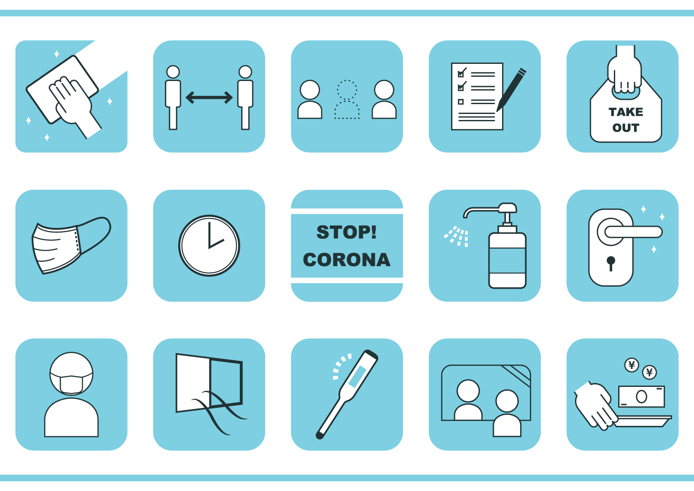

JAST×D4c COVID-19感染リスク分析DB
はじめに
分析
新型コロナウイルス（COVID-19）感染リスク分析ダッシュボード
ver.01
本ダッシュボードは、日本システム技術（株）が誇る国内最大級の医療レセプトデータと国内外のCOVID-19感染状況の公開データを利活用し、（公財）佐々木研究所附属杏雲堂病院院長・相馬正義氏の医学的な知見に基づく監修のもと、現状の可視化に加え、感染リスク予測に関する情報を発信するサイトです。
外部データの可視化
公開されている全世界/日本全国感染状況を可視化し、感染状況を分かりやすくお伝えします。
リスク分析
医療セレプトデータを元に様々な分析手法を用い、個人の属性の違いによる感染リスクをビジュアルに分析します。
リスクシミュレーション
各種データ/解析結果を用い、今後のCOVID-19感染防止のための感染リスクを分かりやすくシミュレーションします。
参考データ

データの可視化、リスク分析、リスクシミュレーションの結果の詳細を分かりやすく説明します。